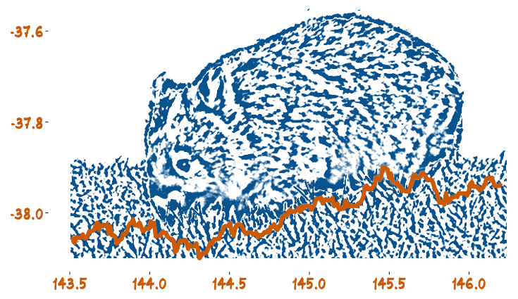

Open the World with Open Source
Workshop Organised by the Monash Business Analytics Team (WOMBAT)
An assortment of tips and tricks
This session runs from 4:00-4:30 and focuses on short talks on tools and packages and code that makes some things amssively easier.